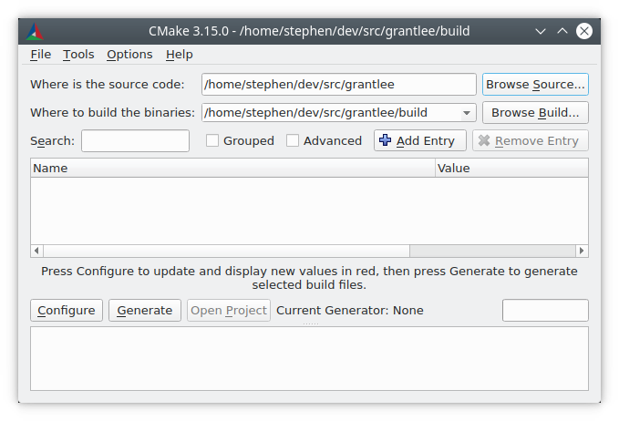
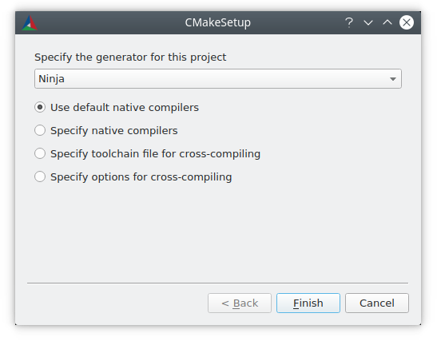
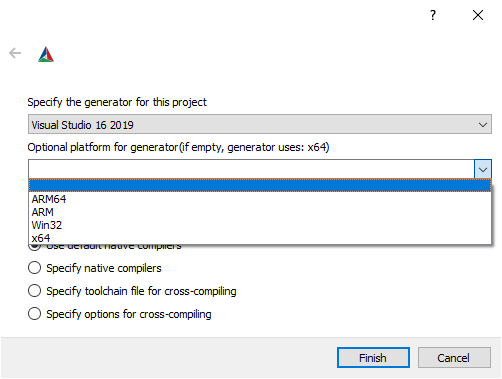
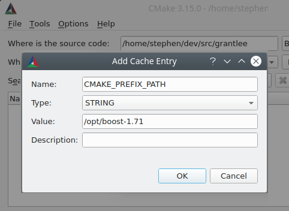

User Interaction Guide¶
Contents
Introduction¶
Where a software package supplies a CMake-based buildsystem with the source of their software, the consumer of the software is required to run a CMake user interaction tool in order to build it.
Well-behaved CMake-based buildsystems do not create any output in the source directory, so typically, the user performs an out-of-source build and performs the build there. First, CMake must be instructed to generate a suitable buildsystem, then the user invokes a build tool to process that generated buildsystem. The generated buildsystem is specific to the machine used to generate it and is not redistributable. Each consumer of a provided source software package is required to use CMake to generate a buildsystem specific to their system.
Generated buildsystems should generally be treated as read-only. The CMake files as a primary artifact should completely specify the buildsystem and there should be no reason to populate properties manually in an IDE for example after generating the buildsystem. CMake will periodically rewrite the generated buildsystem, so modifications by users will be overwritten.
The features and user interfaces described in this manual are available for all CMake-based build systems by virtue of providing CMake files.
The CMake tooling may report errors to the user when
processing provided CMake files, such as reporting that
the compiler is not supported, or the compiler does not
support a required compile option, or a dependency can
not be found. These errors must be resolved by the user
by choosing a different compiler,
installing dependencies,
or instructing CMake where to find them, etc.
Command Line cmake tool¶
A simple but typical use of cmake(1) with a fresh
copy of software source code is to create a build directory
and invoke cmake there:
$ cd some_software-1.4.2
$ mkdir build
$ cd build
$ cmake .. -DCMAKE_INSTALL_PREFIX=/opt/the/prefix
$ cmake --build .
$ cmake --build . --target install
It is recommended to build in a separate directory to the source because that keeps the source directory pristine, allows for building a single source with multiple toolchains, and allows easy clearing of build artifacts by simply deleting the build directory.
The CMake tooling may report warnings which are intended
for the provider of the software, not intended for the
consumer of the software. Such warnings end with “This
warning is for project developers”. Users may disable
such warnings by passing the -Wno-dev flag to
cmake(1).
cmake-gui tool¶
Users more accustomed to GUI interfaces may use the
cmake-gui(1) tool to invoke CMake and generate
a buildsystem.
The source and binary directories must first be populated. It is always advised to use different directories for the source and the build.
Generating a Buildsystem¶
There are several user interface tools which may be used
to generate a buildsystem from CMake files. The
ccmake(1) and cmake-gui(1) tools guide
the user through setting the various necessary options.
The cmake(1) tool can be invoked to specify
options on the command line. This manual describes options
which may be set using any of the user interface tools,
though the mode of setting an option is different for each
tool.
Command line environment¶
When invoking cmake(1) with a command line
buildsystem such as Makefiles or Ninja, it is
necessary to use the correct build environment to
ensure that build tools are available. CMake must be
able to find the appropriate
build tool,
compiler, linker and other tools as needed.
On Linux systems, the appropriate tools are often provided in system-wide locations and may be readily installed through the system package manager. Other toolchains provided by the user or installed in non-default locations can also be used.
When cross-compiling, some platforms may require environment variables to be set or may provide scripts to set the environment.
Visual Studio ships multiple command prompts and
vcvarsall.bat scripts for setting up the
correct environments for command line buildsystems. While
not strictly necessary to use a corresponding
command line environment when using a Visual Studio
generator, doing so has no disadvantages.
When using Xcode, there can be more than one Xcode version installed. Which one to use can be selected in a number of different ways, but the most common methods are:
Setting the default version in the preferences of the Xcode IDE.
Setting the default version via the
xcode-selectcommand line tool.Overriding the default version by setting the
DEVELOPER_DIRenvironment variable when running CMake and the build tool.
For convenience, cmake-gui(1) provides an
environment variable editor.
Command line -G option¶
CMake chooses a generator by default based on the platform. Usually, the default generator is sufficient to allow the user to proceed to build the software.
The user may override the default generator with
the -G option:
$ cmake .. -G Ninja
The output of cmake --help includes a list of
generators available
for the user to choose from. Note that generator
names are case sensitive.
On Unix-like systems (including Mac OS X), the
Unix Makefiles generator is used by
default. A variant of that generator can also be used
on Windows in various environments, such as the
NMake Makefiles and
MinGW Makefiles generator. These generators
generate a Makefile variant which can be executed
with make, gmake, nmake or similar tools.
See the individual generator documentation for more
information on targeted environments and tools.
The Ninja generator is available on all
major platforms. ninja is a build tool similar
in use-cases to make, but with a focus on
performance and efficiency.
On Windows, cmake(1) can be used to generate
solutions for the Visual Studio IDE. Visual Studio
versions may be specified by the product name of the
IDE, which includes a four-digit year. Aliases are
provided for other means by which Visual Studio
versions are sometimes referred to, such as two
digits which correspond to the product version of the
VisualC++ compiler, or a combination of the two:
$ cmake .. -G "Visual Studio 2019"
$ cmake .. -G "Visual Studio 16"
$ cmake .. -G "Visual Studio 16 2019"
Visual Studio generators can target different architectures. One can specify the target architecture using the -A option:
cmake .. -G "Visual Studio 2019" -A x64
cmake .. -G "Visual Studio 16" -A ARM
cmake .. -G "Visual Studio 16 2019" -A ARM64
On Apple, the Xcode generator may be used to
generate project files for the Xcode IDE.
Some IDEs such as KDevelop4, QtCreator and CLion have
native support for CMake-based buildsystems. Those IDEs
provide user interface for selecting an underlying
generator to use, typically a choice between a Makefile
or a Ninja based generator.
Note that it is not possible to change the generator
with -G after the first invocation of CMake. To
change the generator, the build directory must be
deleted and the build must be started from scratch.
When generating Visual Studio project and solutions
files several other options are available to use when
initially running cmake(1).
The Visual Studio toolset can be specified with the
-T option:
$ # Build with the clang-cl toolset
$ cmake.exe .. -G "Visual Studio 16 2019" -A x64 -T LLVM
$ # Build targeting Windows XP
$ cmake.exe .. -G "Visual Studio 16 2019" -A x64 -T v120_xp
Whereas the -A option specifies the _target_
architecture, the -T option can be used to specify
details of the toolchain used. For example, -Thost=x64
can be given to select the 64-bit version of the host
tools. The following demonstrates how to use 64-bit
tools and also build for a 64-bit target architecture:
$ cmake .. -G "Visual Studio 16 2019" -A x64 -Thost=x64
Choosing a generator in cmake-gui¶
The “Configure” button triggers a new dialog to select the CMake generator to use.
All generators available on the command line are also
available in cmake-gui(1).
When choosing a Visual Studio generator, further options are available to set an architecture to generate for.
Setting Build Variables¶
Software projects often require variables to be set on the command line when invoking CMake. Some of the most commonly used CMake variables are listed in the table below:
Variable |
Meaning |
|---|---|
Path to search for
|
|
Path to search for additional CMake modules |
|
Build configuration, such as
|
|
Location to install the
software to with the
|
|
File containing cross-compiling
data such as
|
|
Whether to build shared
instead of static libraries
for |
|
Generate a |
Other project-specific variables may be available to control builds, such as enabling or disabling components of the project.
There is no convention provided by CMake for how
such variables are named between different
provided buildsystems, except that variables with
the prefix CMAKE_ usually refer to options
provided by CMake itself and should not be used
in third-party options, which should use
their own prefix instead. The
cmake-gui(1) tool can display options
in groups defined by their prefix, so it makes
sense for third parties to ensure that they use a
self-consistent prefix.
Setting variables on the command line¶
CMake variables can be set on the command line either when creating the initial build:
$ mkdir build
$ cd build
$ cmake .. -G Ninja -DCMAKE_BUILD_TYPE=Debug
or later on a subsequent invocation of
cmake(1):
$ cd build
$ cmake . -DCMAKE_BUILD_TYPE=Debug
The -U flag may be used to unset variables
on the cmake(1) command line:
$ cd build
$ cmake . -UMyPackage_DIR
A CMake buildsystem which was initially created
on the command line can be modified using the
cmake-gui(1) and vice-versa.
The cmake(1) tool allows specifying a
file to use to populate the initial cache using
the -C option. This can be useful to simplify
commands and scripts which repeatedly require the
same cache entries.
Setting variables with cmake-gui¶
Variables may be set in the cmake-gui using the “Add Entry” button. This triggers a new dialog to set the value of the variable.
The main view of the cmake-gui(1) user interface
can be used to edit existing variables.
The CMake Cache¶
When CMake is executed, it needs to find the locations of compilers, tools and dependencies. It also needs to be able to consistently re-generate a buildsystem to use the same compile/link flags and paths to dependencies. Such parameters are also required to be configurable by the user because they are paths and options specific to the users system.
When it is first executed, CMake generates a
CMakeCache.txt file in the build directory containing
key-value pairs for such artifacts. The cache file can be
viewed or edited by the user by running the
cmake-gui(1) or ccmake(1) tool. The
tools provide an interactive interface for re-configuring
the provided software and re-generating the buildsystem,
as is needed after editing cached values. Each cache
entry may have an associated short help text which is
displayed in the user interface tools.
The cache entries may also have a type to signify how it
should be presented in the user interface. For example,
a cache entry of type BOOL can be edited by a
checkbox in a user interface, a STRING can be edited
in a text field, and a FILEPATH while similar to a
STRING should also provide a way to locate filesystem
paths using a file dialog. An entry of type STRING
may provide a restricted list of allowed values which are
then provided in a drop-down menu in the
cmake-gui(1) user interface (see the
STRINGS cache property).
The CMake files shipped with a software package may also
define boolean toggle options using the option()
command. The command creates a cache entry which has a
help text and a default value. Such cache entries are
typically specific to the provided software and affect
the configuration of the build, such as whether tests
and examples are built, whether to build with exceptions
enabled etc.
Presets¶
CMake understands a file, CMakePresets.json, and its
user-specific counterpart, CMakeUserPresets.json, for
saving presets for commonly-used configure settings. These
presets can set the build directory, generator, cache
variables, environment variables, and other command-line
options. All of these options can be overridden by the
user. The full details of the CMakePresets.json format
are listed in the cmake-presets(7) manual.
Using presets on the command-line¶
When using the cmake(1) command line tool, a
preset can be invoked by using the --preset option. If
--preset is specified, the generator and build
directory are not required, but can be specified to
override them. For example, if you have the following
CMakePresets.json file:
{
"version": 1,
"configurePresets": [
{
"name": "ninja-release",
"binaryDir": "${sourceDir}/build/${presetName}",
"generator": "Ninja",
"cacheVariables": {
"CMAKE_BUILD_TYPE": "Release"
}
}
]
}
and you run the following:
cmake -S /path/to/source --preset=ninja-release
This will generate a build directory in
/path/to/source/build/ninja-release with the
Ninja generator, and with
CMAKE_BUILD_TYPE set to Release.
If you want to see the list of available presets, you can run:
cmake -S /path/to/source --list-presets
This will list the presets available in
/path/to/source/CMakePresets.json and
/path/to/source/CMakeUsersPresets.json without
generating a build tree.
Using presets in cmake-gui¶
If a project has presets available, either through
CMakePresets.json or CMakeUserPresets.json, the
list of presets will appear in a drop-down menu in
cmake-gui(1) between the source directory and
the binary directory. Choosing a preset sets the binary
directory, generator, environment variables, and cache
variables, but all of these options can be overridden after
a preset is selected.
Invoking the Buildsystem¶
After generating the buildsystem, the software can be built by invoking the particular build tool. In the case of the IDE generators, this can involve loading the generated project file into the IDE to invoke the build.
CMake is aware of the specific build tool needed to invoke a build so in general, to build a buildsystem or project from the command line after generating, the following command may be invoked in the build directory:
$ cmake --build .
The --build flag enables a particular mode of
operation for the cmake(1) tool. It invokes
the CMAKE_MAKE_PROGRAM command associated
with the generator, or
the build tool configured by the user.
The --build mode also accepts the parameter
--target to specify a particular target to build,
for example a particular library, executable or
custom target, or a particular special target like
install:
$ cmake --build . --target myexe
The --build mode also accepts a --config parameter
in the case of multi-config generators to specify which
particular configuration to build:
$ cmake --build . --target myexe --config Release
The --config option has no effect if the generator
generates a buildsystem specific to a configuration which
is chosen when invoking cmake with the
CMAKE_BUILD_TYPE variable.
Some buildsystems omit details of command lines invoked
during the build. The --verbose flag can be used to
cause those command lines to be shown:
$ cmake --build . --target myexe --verbose
The --build mode can also pass particular command
line options to the underlying build tool by listing
them after --. This can be useful to specify
options to the build tool, such as to continue the
build after a failed job, where CMake does not
provide a high-level user interface.
For all generators, it is possible to run the underlying
build tool after invoking CMake. For example, make
may be executed after generating with the
Unix Makefiles generator to invoke the build,
or ninja after generating with the Ninja
generator etc. The IDE buildsystems usually provide
command line tooling for building a project which can
also be invoked.
Selecting a Target¶
Each executable and library described in the CMake files is a build target, and the buildsystem may describe custom targets, either for internal use, or for user consumption, for example to create documentation.
CMake provides some built-in targets for all buildsystems providing CMake files.
allThe default target used by
MakefileandNinjagenerators. Builds all targets in the buildsystem, except those which are excluded by theirEXCLUDE_FROM_ALLtarget property orEXCLUDE_FROM_ALLdirectory property. The nameALL_BUILDis used for this purpose for the Xcode and Visual Studio generators.helpLists the targets available for build. This target is available when using the
Unix MakefilesorNinjagenerator, and the exact output is tool-specific.cleanDelete built object files and other output files. The
Makefilebased generators create acleantarget per directory, so that an individual directory can be cleaned. TheNinjatool provides its own granular-t cleansystem.testRuns tests. This target is only automatically available if the CMake files provide CTest-based tests. See also Running Tests.
installInstalls the software. This target is only automatically available if the software defines install rules with the
install()command. See also Software Installation.packageCreates a binary package. This target is only automatically available if the CMake files provide CPack-based packages.
package_sourceCreates a source package. This target is only automatically available if the CMake files provide CPack-based packages.
For Makefile based systems, /fast variants of binary
build targets are provided. The /fast variants are used
to build the specified target without regard for its
dependencies. The dependencies are not checked and
are not rebuilt if out of date. The Ninja
generator is sufficiently fast at dependency checking that
such targets are not provided for that generator.
Makefile based systems also provide build-targets to
preprocess, assemble and compile individual files in a
particular directory.
$ make foo.cpp.i
$ make foo.cpp.s
$ make foo.cpp.o
The file extension is built into the name of the target because another file with the same name but a different extension may exist. However, build-targets without the file extension are also provided.
$ make foo.i
$ make foo.s
$ make foo.o
In buildsystems which contain foo.c and foo.cpp,
building the foo.i target will preprocess both files.
Specifying a Build Program¶
The program invoked by the --build mode is determined
by the CMAKE_MAKE_PROGRAM variable. For most
generators, the particular program does not need to be
configured.
Generator |
Default make program |
Alternatives |
|---|---|---|
XCode |
|
|
Unix Makefiles |
|
|
NMake Makefiles |
|
|
NMake Makefiles JOM |
|
|
MinGW Makefiles |
|
|
MSYS Makefiles |
|
|
Ninja |
|
|
Visual Studio |
|
|
Watcom WMake |
|
The jom tool is capable of reading makefiles of the
NMake flavor and building in parallel, while the
nmake tool always builds serially. After generating
with the NMake Makefiles generator a user
can run jom instead of nmake. The --build
mode would also use jom if the
CMAKE_MAKE_PROGRAM was set to jom while
using the NMake Makefiles generator, and
as a convenience, the NMake Makefiles JOM
generator is provided to find jom in the normal way
and use it as the CMAKE_MAKE_PROGRAM. For
completeness, nmake is an alternative tool which
can process the output of the
NMake Makefiles JOM generator, but doing
so would be a pessimisation.
Software Installation¶
The CMAKE_INSTALL_PREFIX variable can be
set in the CMake cache to specify where to install the
provided software. If the provided software has install
rules, specified using the install() command,
they will install artifacts into that prefix. On Windows,
the default installation location corresponds to the
ProgramFiles system directory which may be
architecture specific. On Unix hosts, /usr/local is
the default installation location.
The CMAKE_INSTALL_PREFIX variable always
refers to the installation prefix on the target
filesystem.
In cross-compiling or packaging scenarios where the
sysroot is read-only or where the sysroot should otherwise
remain pristine, the CMAKE_STAGING_PREFIX
variable can be set to a location to actually install
the files.
The commands:
$ cmake .. -DCMAKE_INSTALL_PREFIX=/usr/local \
-DCMAKE_SYSROOT=$HOME/root \
-DCMAKE_STAGING_PREFIX=/tmp/package
$ cmake --build .
$ cmake --build . --target install
result in files being installed to paths such
as /tmp/package/lib/libfoo.so on the host machine.
The /usr/local location on the host machine is
not affected.
Some provided software may specify uninstall rules,
but CMake does not generate such rules by default itself.
Running Tests¶
The ctest(1) tool is shipped with the CMake
distribution to execute provided tests and report
results. The test build-target is provided to run
all available tests, but the ctest(1) tool
allows granular control over which tests to run, how to
run them, and how to report results. Executing
ctest(1) in the build directory is equivalent
to running the test target:
$ ctest
A regular expression can be passed to run only tests
which match the expression. To run only tests with
Qt in their name:
$ ctest -R Qt
Tests can be excluded by regular expression too. To
run only tests without Qt in their name:
$ ctest -E Qt
Tests can be run in parallel by passing -j arguments
to ctest(1):
$ ctest -R Qt -j8
The environment variable CTEST_PARALLEL_LEVEL
can alternatively be set to avoid the need to pass
-j.
By default ctest(1) does not print the output
from the tests. The command line argument -V (or
--verbose) enables verbose mode to print the
output from all tests.
The --output-on-failure option prints the test
output for failing tests only. The environment variable
CTEST_OUTPUT_ON_FAILURE
can be set to 1 as an alternative to passing the
--output-on-failure option to ctest(1).